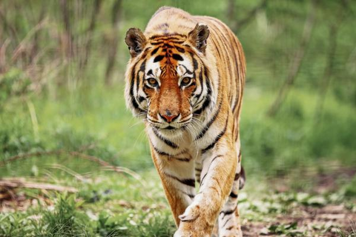
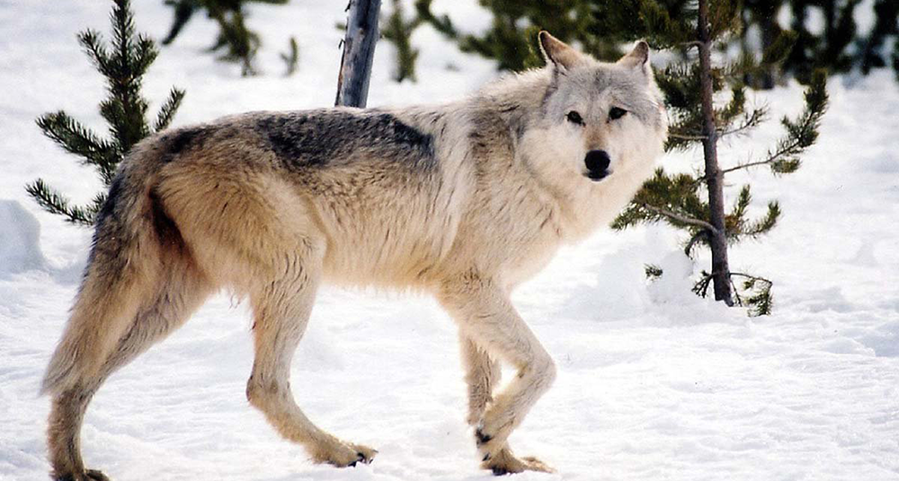

La pantera negra es una variación negra (melanismo) de varias especies de grandes félidos, en especial del leopardo (Panthera pardus) y del jaguar (Panthera onca). Pero cabe recalcar que no es una nueva especie, ni siquiera una subespecie, es simplemente una variación negra de estos animales.
La pantera negra es una variación negra (melanismo) de varias especies de grandes félidos, en especial del leopardo (Panthera pardus) y del jaguar (Panthera onca). Pero cabe recalcar que no es una nueva especie, ni siquiera una subespecie, es simplemente una variación negra de estos animales.
 Portada Portada
| El tigre
|  El leopardo El leopardo
| El lobo
|  El león El león
|